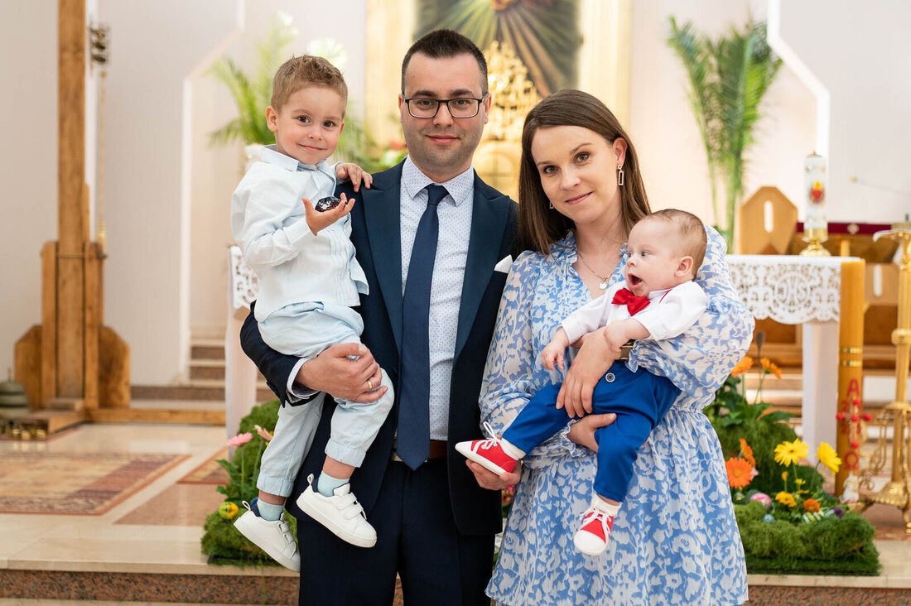
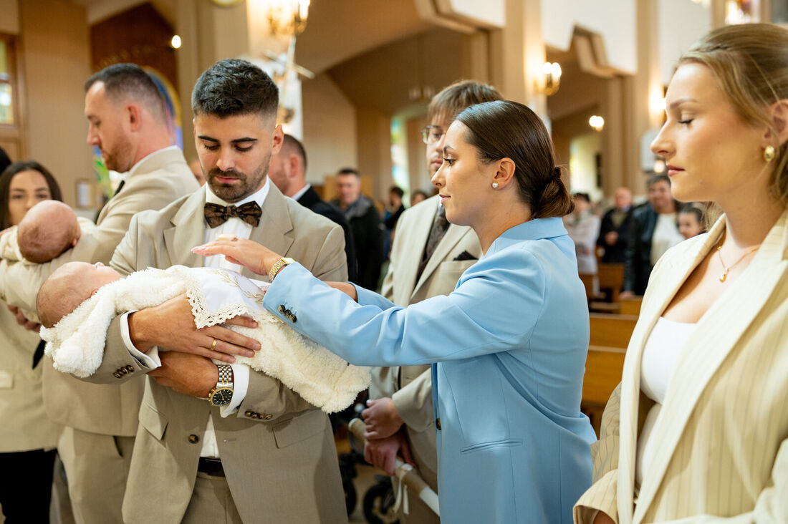
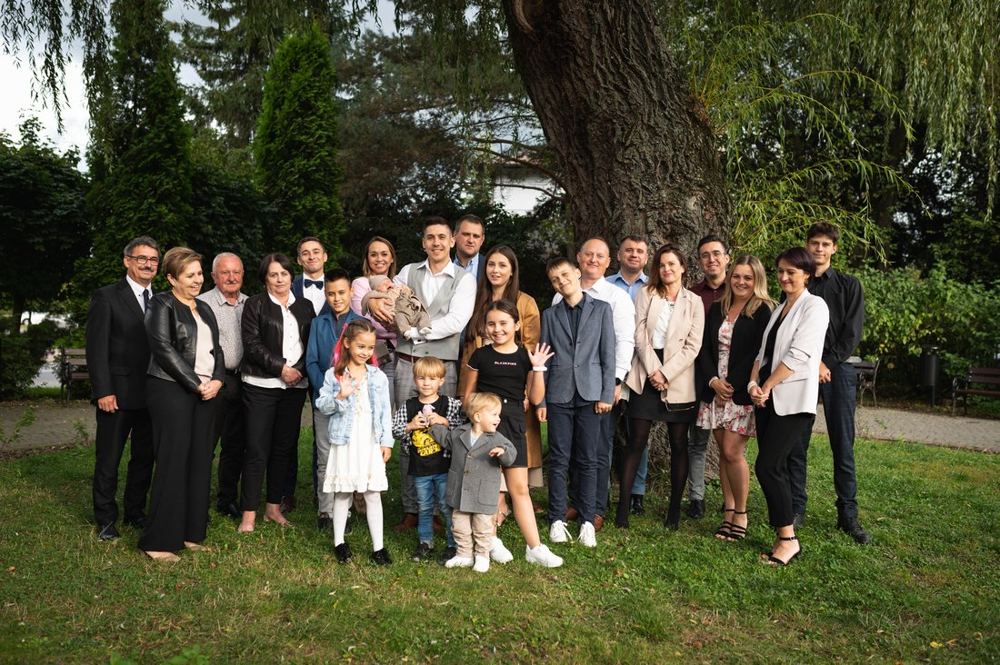
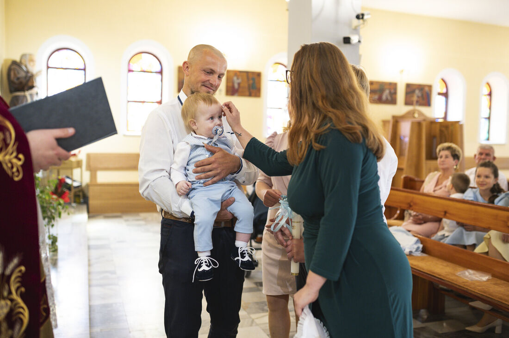
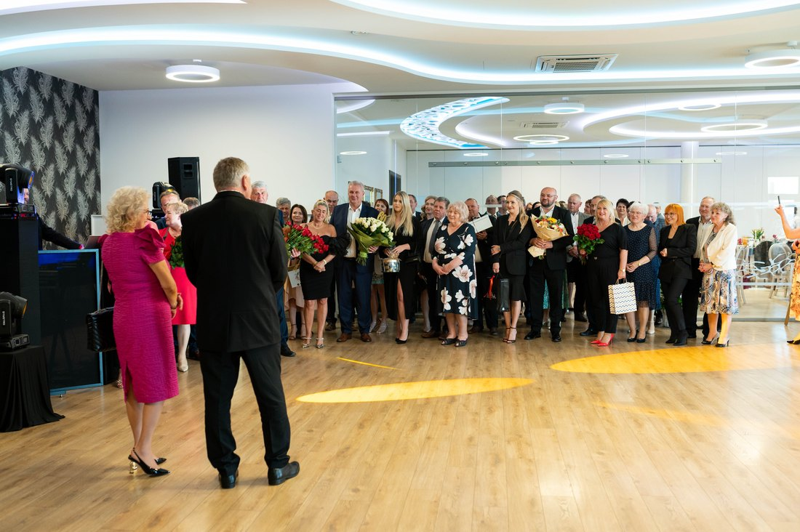

Fotograf na imprezę okolicznościową w Ropczycach i okolicy — jak wygląda reportaż z ważnego dnia?

Chrzest, roczek, jubileusz, komunia — jak wygląda reportaż z rodzinnej uroczystości, ile godzin zamówić i co dostajecie po wszystkim.
Są dni, których nie da się powtórzyć. Chrzest dziecka, pierwsze urodziny, jubileusz rodziców, komunia — najważniejsze dzieje się w nich między punktami programu: w spojrzeniu dziadka, w śmiechu dzieci pod stołem, w chwili, gdy ktoś ociera łzę i myśli, że nikt nie widzi.
Dlatego reportaż z uroczystości nie powinien być kilkoma ustawionymi zdjęciami. Ma opowiedzieć cały dzień, tak żebyście za dziesięć lat poczuli, jak to było. Fotografuję uroczystości rodzinne w Ropczycach, Sędziszowie Małopolskim, Dębicy, Rzeszowie, Jaśle, Krośnie, Tarnowie i Tarnobrzegu — od kameralnych obiadów w domu po przyjęcia na kilkadziesiąt osób.
Jakie uroczystości fotografuję
Najczęściej są to chrzty i komunie, roczki i urodziny — od pierwszych po osiemnastki i okrągłe jubileusze — rocznice ślubu, baby shower i wieczory panieńskie, studniówki i półmetki oraz zwykłe rodzinne przyjęcia. Każda z tych okazji wygląda inaczej: chrzest ma ceremonię w kościele, a roczek rozgrywa się przy torcie i na dywanie. Dlatego nie pracuję według jednego schematu. Wszystkie kategorie zobaczycie na stronie uroczystości rodzinne.
Na czym polega reportaż z imprezy rodzinnej
Nie ustawiam gości na pół godziny pod ścianą i nie przerywam rozmów. Na przyjęciu jestem po prostu jednym z gości, tyle że z aparatem. Fotografuję to, co dzieje się naprawdę: relacje, wzruszenia, drobne gesty.

Jest też czas na klasyczne zdjęcia rodzinne. Zajmują kilka minut: rodzice z dzieckiem, dziadkowie z wnukami, rodzeństwo i jedno wspólne zdjęcie wszystkich. Po latach to często najcenniejsze kadry, zwłaszcza gdy rodzina rzadko spotyka się w komplecie.

Fotograf na chrzest
Zdjęcia mogą zacząć się jeszcze w domu, przy ubieraniu dziecka. Potem jest ceremonia w kościele, zdjęcia rodzinne po mszy i przyjęcie. Zakres dopasowujemy do Waszego dnia: od samej ceremonii po cały dzień. Praktyczne ustalenia przed chrztem opisałam osobno: o czym warto pomyśleć wcześniej. Pakiety i ceny znajdziecie na stronie chrzty.

Fotograf na roczek i urodziny dziecka
Pierwsze urodziny mijają błyskawicznie. Pierwszy tort, zdziwiona mina, goście pochylający się nad dzieckiem — to momenty, które potem oglądacie najczęściej. Fotografuję przebieg przyjęcia, dekoracje i rodzinne zdjęcia. Jeśli chcecie mieć więcej kadrów tylko rodziców z maluchem, możemy umówić osobną sesję rodzinną.
Fotograf na jubileusz i urodziny dorosłych
Okrągłe urodziny, osiemnastka czy rocznica to często jedna z niewielu okazji, kiedy przy jednym stole siedzi kilka pokoleń. Fotografuję powitanie gości, toasty, tort, prezenty i rozmowy, do tego kilka uporządkowanych zdjęć z najbliższymi. Po latach takie reportaże mają ogromną wartość.

Ile godzin warto zamówić
Nie każda uroczystość potrzebuje całego dnia. Sama ceremonia chrztu to zwykle godzina, chrzest z przyjęciem to trzy godziny, a z przygotowaniami w domu cztery. Roczek, urodziny i jubileusz najczęściej mieszczą się w trzech godzinach. Gdy przyjęcie się przeciąga, dokupujecie kolejną godzinę. Nie namawiam do większego pakietu „na zapas” — ważne, żebym była tam, gdzie dzieje się coś ważnego.
Jak przygotować się do reportażu
Niewiele trzeba. Wystarczy powiedzieć mi:
- gdzie odbywa się uroczystość i o której zaczynają się najważniejsze momenty
- czy planowane są niespodzianki, toast albo wręczenie prezentów
- na których osobach zależy Wam szczególnie — na przykład na prababci, która rzadko bywa na takich okazjach
Reszta dzieje się sama, a Wy możecie spokojnie zająć się gośćmi.
Gdzie pracuję: Ropczyce, Rzeszów, Jasło, Krosno, Tarnów i okolice
Najczęściej w Ropczycach, Sędziszowie Małopolskim i Dębicy, ale dojeżdżam też do Rzeszowa, Jasła, Krosna, Tarnowa i Tarnobrzegu — w promieniu około 60 kilometrów od Ropczyc. Dojazd do 30 km od Ropczyc jest w cenie, dalej liczę 1,5 zł za kilometr. Jeśli Wasza uroczystość jest dalej, napiszcie, ustalimy to indywidualnie.
Co dostajecie po reportażu
Starannie wybrane i obrobione zdjęcia trafiają do prywatnej galerii internetowej z kodem PIN. Link i kod wysyłacie rodzinie, a każdy pobiera zdjęcia sam, w pełnej rozdzielczości, bez zakładania konta. W pakietach chrzcielnych dochodzą wydruki 15×23, żeby zdjęcia nie zostały tylko w telefonie.
Ile kosztuje fotograf na uroczystość rodzinną
Cena zależy od czasu pracy. Chrzest to 600 zł za samą ceremonię (godzina), 1000 zł za ceremonię z przyjęciem (trzy godziny) i 1300 zł za cały dzień z przygotowaniami (cztery godziny). Roczek, urodziny, jubileusz lub rocznica to 900 zł za trzy godziny. Dodatkowa godzina kosztuje 200 zł (urodziny, jubileusze) lub 250 zł (chrzty). To ceny końcowe, bez gwiazdek. Jeśli nie wiecie, jaki zakres będzie najlepszy, napiszcie kilka słów o wydarzeniu, a doradzę.
Czy warto zatrudnić fotografa na rodzinne przyjęcie?
Jeśli wystarczy Wam kilka zdjęć z telefonu — nie zawsze. Jeśli chcecie mieć historię całego dnia, zmienia to bardzo dużo. Nie musicie prosić gości o zdjęcia ani pilnować, czy ktoś uchwycił toast babci. Możecie być częścią uroczystości, zamiast ją dokumentować.
Najczęstsze pytania
Czy fotografujesz podczas mszy w kościele?
Tak, pracuję dyskretnie: bez lampy błyskowej i bez wchodzenia księdzu w kadr. Na przyjęciu jestem po prostu jednym z gości, tyle że z aparatem.
Czy trzeba pozować do zdjęć?
Nie. Większość kadrów powstaje bez pozowania. Zdjęcia rodzinne to kilka minut w ciągu całej uroczystości.
Ile godzin fotografa zamówić na chrzest, roczek lub urodziny?
Na samą ceremonię chrztu wystarczy godzina, na chrzest z przyjęciem trzy godziny, a z przygotowaniami w domu cztery. Roczek, urodziny lub jubileusz zwykle zamykają się w trzech godzinach. Gdy przyjęcie się przeciąga, dokupujecie kolejną godzinę.
Czy dojeżdżasz do Rzeszowa, Jasła, Krosna, Tarnowa i Tarnobrzegu?
Tak, w promieniu około 60 km od Ropczyc. Dojazd do 30 km jest w cenie, dalej liczę 1,5 zł za kilometr, więc kwotę poznajecie z góry.
Jak odbieram zdjęcia?
Przez prywatną galerię internetową z kodem PIN. Link i kod wysyłacie rodzinie, każdy pobiera zdjęcia w pełnej rozdzielczości, bez zakładania konta.
Szukacie fotografa na uroczystość w Ropczycach lub okolicy?
Napiszcie, co świętujecie i kiedy. Sprawdzimy termin i dobierzemy zakres reportażu, który najlepiej pasuje do Waszego dnia.
Interesuje Was ta usługa?
Zobacz uroczystości, które fotografuję